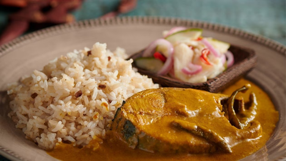
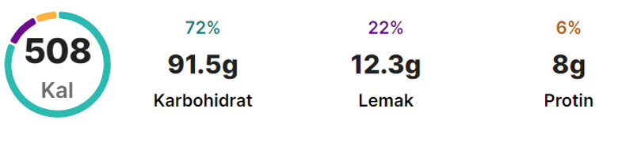

Nasi Dagang


In Kelantan it is popular with Nasi Tumpang for breakfast, in Terengganu it is popular with Nasi Dagang for breakfast. Nasi Dagang may seem a bit complicated to make, but it's actually not difficult to make this delicious breakfast. For sure, the material has to be enough. Here we share a simple Terengganu commercial rice recipe for you to try.
Recipe:
Ingredients:
The curry
- 1 kg cod fish
- 1 cup tamarind water
- 2-3 cloves of garlic
- 1/2 inch galangal
- 3 pieces of asam gelugor
- Sufficient water
- 1 tsp salt
- 1 large onion
- 4 small shallots
- 4 cloves of garlic
- 1/2 inch galangal
- 1 inch ginger
- 1 piece of live turmeric
- A little water
- 1/2 tsp fenugreek
- 8-10 stalks of chili rice
- 3 tbsp goulash spice
- Coconut milk from 1 coconut
- 2-3 spoons of ground chili
- Fish stew
- 2 teaspoons of tombstone sugar
- 1-2 pieces of asam gelugor
- Salt to taste
- 2 spoon rustling
Directions:
- Ways to boil fish:
- Cut and wash the fish with water mixed with tamarind. Then rinse with water.
- Roughly chop the garlic and galangal
- Put cod fish, tamarind paste, garlic and galangal into the pot.
- Add water to submerge, salt and boil for approximately 15-20 minutes or until the fish is cooked.
- When the fish is cooked, separate the fish and the boiling water.
- Save the boiled water to add to the goulash sauce.
- Ways to prepare ground ingredients and goulash spices:
- Roughly chop large shallots, small shallots, garlic, galangal, ginger, live turmeric.
- Put the coarsely chopped ingredients and a little water into the blender and blend finely.
- For Che Nom goulash spice use Rose Flower Cap. Mix the spices with water and stir well.
- Ways to cook curry:
- Heat the oil and fry the ground ingredients and fenugreek seeds. Cook until the ground ingredients are dry.
- Add ground chili and stir until combined.
- Add a little fish broth and goulash spice mixture. Then stir-fry until dry and the oil breaks.
- Add water 2-3 times and cook again until the stir-fry ingredients are dry.
- Add granulated sugar and stir until dry.
- When it's dry, add coconut milk and sour cream and cook until the sauce boils.
- Add all the fish broth and salt.
- When the goulash boils (about 10 minutes), add the crackers and continue to simmer until the oil floats on the surface.
- Add boiled cod fish and cook for another 10 minutes to mix.
- When it boils, sprinkle the rice chilies (rice chilies do not need to remove the stems) and turn off the heat.
The Noodles
- 1 packet of vermicelli
- Sufficient water
Directions:
- Heat water over medium heat. Wait until it boils.
- If it boils, add vermicelli noodles and boil until slightly soft.
- Vermicelli usually soften quickly in hot water. So don't boil it too long. If the noodles are overcooked, the vermicelli can be ruined and disintegrated.
The rice
- 4 cups /800g fragrant rice
- 1 cups /200g glutinous rice
- 2 cups of coconut milk
- 2 cups of liquid coconut milk
- 1 1/2 tsp fenugreek
- 2 inches of ginger
- 3 small shallots
- 3-4 teaspoons of salt
- 2 tablespoons of sugar
Directions:
- Finely cut ginger like a match.
- Thinly slice small shallots.
- Mix Thai fragrant rice and glutinous rice (optional). If you use fragrant rice, you don't need to add glutinous rice, but if you use regular rice, you must add glutinous rice.
- Wash and soak the rice for approximately 8-9 hours.
- Drain the water and put the rice in the steamer. You can if you want to cover the rice with banana leaves.
- Make a hole between the rice. Can make one big hole in the middle or many holes at once.
- When the water in the steamer is hot, you can add the pan filled with rice.
- Steam for about 10 minutes.
- For thick coconut milk, squeeze grated coconut with 2 cups of water. Squeeze the coconut milk and mix it with salt and sugar.
- For liquid coconut milk, squeeze (second squeeze from the same grated coconut) grated coconut with 1 cup of water. If you don't have liquid coconut milk, you can steam the rice with water as usual and add thick coconut milk or boxed coconut milk last.
- Transfer the rice in a large container/bowl.
- Pour in the liquid coconut milk and mix (stir) with the rice.
- Add fenugreek and stir.
- When the rice is dry, put the rice back in the steamer and continue steaming for about 20 minutes.
- After 20 minutes, move the rice back in the big bowl
- Add onion slices, ginger and thick coconut milk. Stir until the rice is dry and absorbs all the moisture from the coconut milk.
- Transfer the rice in an aluminum container (to delay stale rice).
- Press and flatten the surface of the rice. Cover and let the rice rest for approximately 15-20 minutes.
- Served with pickles and cod fish goulash.
The Acar
- 1 stick of cucumber
- 1/2 carrot stick
- 1/2 large onion
- 1 large chili stalk
- 1 stalk of rice chili
- A little bit of salt
- 1-2 tablespoons of sugar
- Vinegar
Directions:
- Cut the cucumber lengthwise (like a match) and remove the middle / seeds.
- Carrots, remove the skin and cut into matchsticks (you can grate them if you like).
- Thinly slice the onion, red chili and green chili.
- Put all the cut ingredients in a bowl.
- Season with sugar, salt and vinegar.
- Stir well and store in the refrigerator.